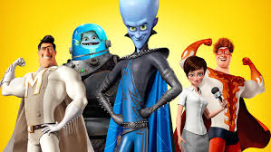

About Mega Mind
Mega Minds is a super-intelligent alien supervillain, who after a long-lasting battle one day actually destroys his foe, the much-loved superhero Metro Man. Megamind later finds out that his villainy has no purpose and thus creates a new superhero to serve as his nemesis. His plan backfires, as he ends up creating instead a new supervillain. With Metro City spiraling out of control, Megamind attempts to set things right and discovers his newfound purpose—as a superhero.
Mega Mind and his Friends
Mega Mind's Characteristics
- He's got a super big, blue head.
- He's always had a crush on Roxanne.
- His best friend ever is Minion.
Mega Mind's Friends
Mega Mind's best friend in the whole world is Minion, a pet fish that has had his back since he was born. Roxanne later became Mega Mind's friend too. Click on the links below to read more about them.